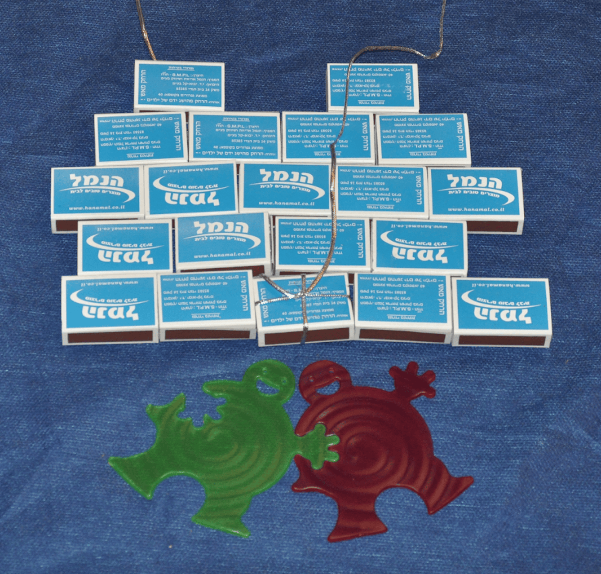
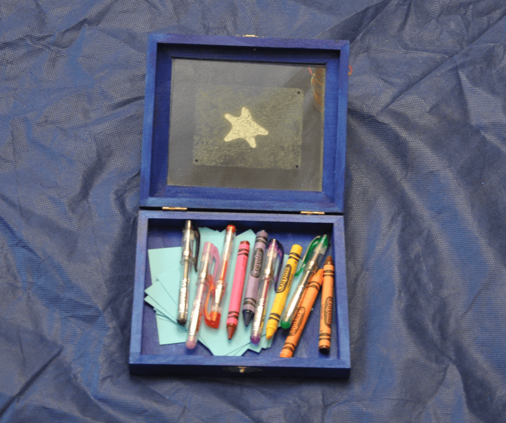
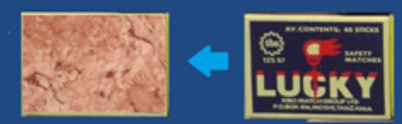
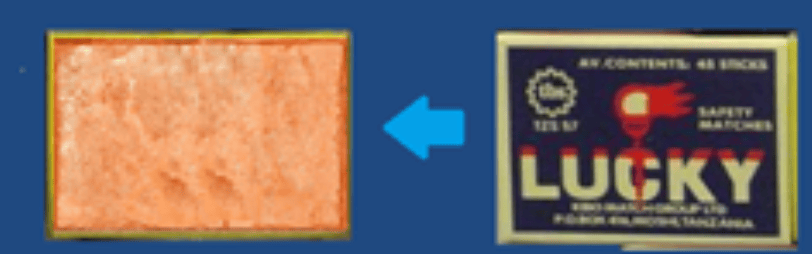
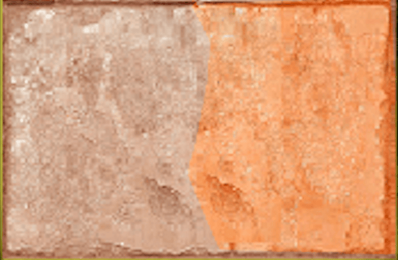
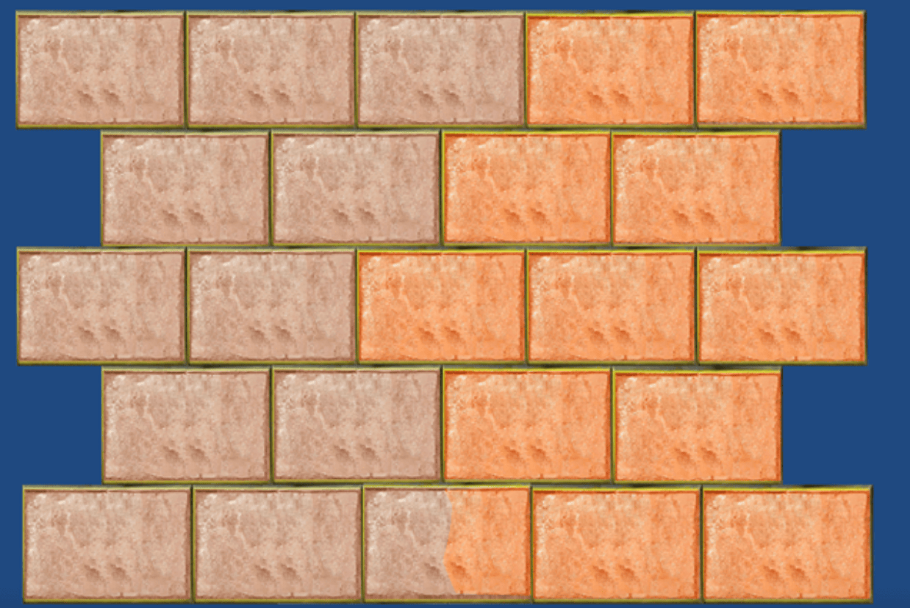
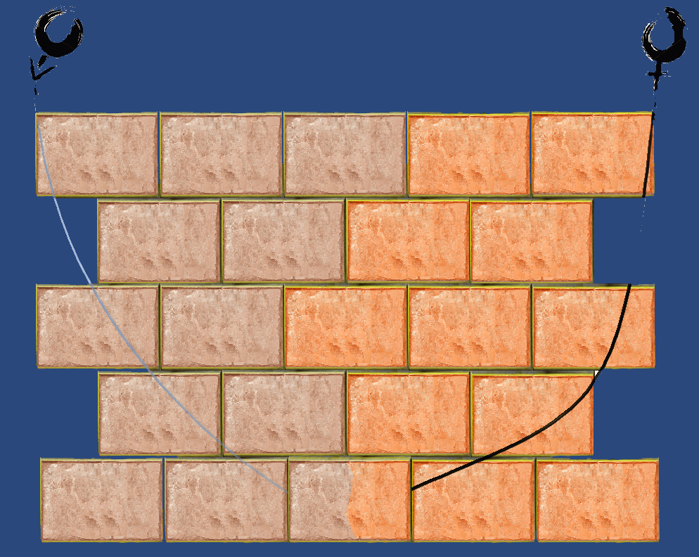
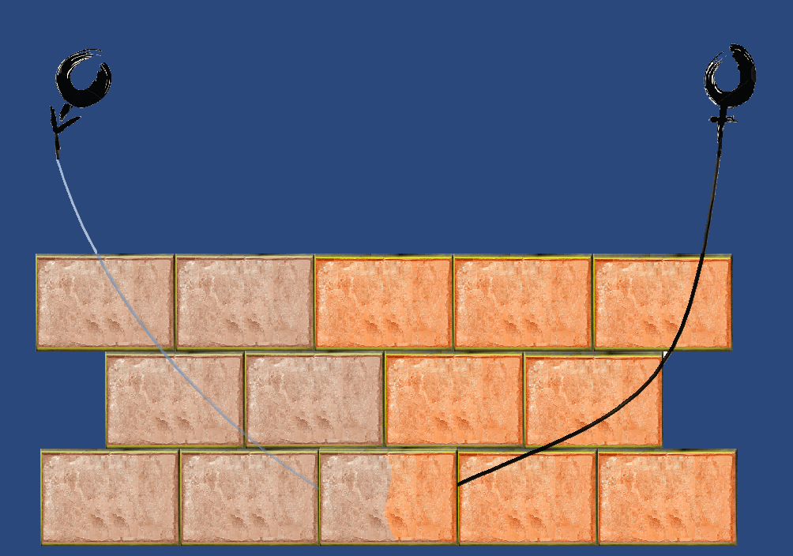
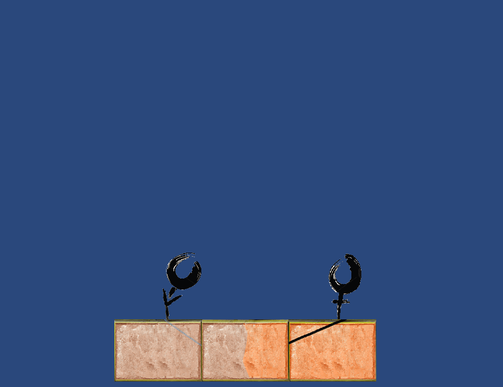

חומת חיבור

קהל יעד:
מתנה זו נועדה להסיר עכבות / חומות בין אנשים.
ידוע הוא שהדבר הכי חשוב בקשר הוא התקשורת. המטרה של המתנה היא ללמד את הצדדים לתקשר. ליצור שפה משותפת, ללמוד מה מעכב מה מפריע ויוצר חומה.
המתנה בנויה כך שבחלקים העליונים של החומה יהיו נושאים שקל לגשר עליהם, וככל שמעמיקים לאבני החומה התחתונות יהיו נושאים שקשים יותר לגישור.
כך שבפועל הנושאים העליונים נועדו ליצור תקשורת טובה, וכשמגיעים לנושאים הקשים יותר, כבר נוצרה שפה משותפת וקל יותר לגשר על הפערים.
החל מחומה הקיימת בני בני זוג וכלה בחומה בין הורים לילדים, שותפים וכל שני אנשים המקיימים ביניהם איזהו קשר ורוצים להסיר מעליהם עכבות בקשר.
הדוגמא שאביא כאן כפרט שמעיד על הכלל תהיה הסרת עכבות ביחסי מין בין זוג גבר-אישה.
מצרכים:
- קופסאות קטנות שוות בגודלן (קופסאות גפרורים ריקות)
- מדבקה / נייר בעל מרקם של "חומה"
- דבק
- פתקים קטנים שיכנסו לקופסאות הגפרורים
- דמות גבר (כל דבר שמייצג גבר, החל מסמל וכלה בבובה קטנה)
- דמות אישה (כל דבר שמייצג אישה, החל מסמל וכלה בבובה קטנה)
אופן ההכנה:
הכנת העכבות:
לעצב פתקים שעליהם יכתבו העכבות, אפשר בצורה היתולית / שנונה / מתוכחמת / פשוטה – כתלות למי זה מיועד.
דוגמאות:
• "מגע: לא נעים לי איך שאתה מלטף לי את השיער"
• סקס באור: תמונה של נורה עם הכיתוב "יציאה לאור"
• מין אוראלי: אתה בא למצוא צלי?
• מין אנאלי: השער האחורי
• תנוחות לא שגרתיות: הנח/י אותי
חשוב: מספר שווה של עכבות לשני הצדדים, אם הגבר הוא נותן המתנה ומציין את העכבות של האישה יש ליצור עכבה שהגבר "נותן בתמורה" מסיר מעליו ולהיפך, ההדדיות היא חשובה. כך שיש להכין מספר שווה של עכבות עבור הגבר והאישה.
אפשר להכין את המתנה יחד, ככה כל אחד כותב (מבלי שהשני יראה) את העכבות שהוא מרגיש שיש לפרטנר שלו, את הפתקים עליהם נכתבו העכבות יש להכניס לקופסאות גפרורים שיהוו את אבני החומה.

אבני החומה:
לאחר שהכונסו הפתקים לקופסאות הגפרורים יש להפוך את הקופסאות ל"אבני חומה", ניתן לבצע זאת באמצעות הדבקה של "טפט" עם טקסטוקה של אבן, או כל דבר הנראה כמו אבן וניתן להדבקה על הקופסא, חשוב לייצר שני סוגים של אבני חומה, כך שיהא הבדל בן הגבר לאשה.
לאחר ההדבקה והכנסת הפתקים יש לנו את אבני הבניין:


אבן המפגש:
אבן נוספת שיש להכין היא "אבן המפגש" בה יש לשים משהו שהוא "שלכם": תאריך שבו הכרתם, מילות שיר, תמונה שלכם. לחילופין אפשר לשים בה את השאיפה שאליה אתם רוצים להגיע לאחר הסרת העכבות: לעבור לגור יחיד, הצעת נישואין וכל דבר שיחבר אתכם.

בניית החומה:
שוב, החומה בנויה כך שבכל אחד מ"אבניה" (קופסאת גפרורים) מונחת עכבה של אחד מבני הזוג.
מסדרים את ה"אבנים" על משטח: צד ימין של החומה יכול לשמש עבור עכבות של האישה, צד שמאל עבור העכבות של הגבר (או הפוך כמובן).
לפני הדבקת האבנים זו לזו כדי ליצור בפועל את החומה, יש לשזור חבל בין אבני החומה.

החוליה המקשרת:
ניתן להשתמש בכל חבל / חוט תפירה חזק / חוט דיג וכדומה.
החבל הוא החוליה המקשרת בין בני הזוג, בכל אחד מקצוות החבל יש להניח את הדמויות, בקצה אחד דמות האישה בקצה אחר דמות הגבר. בדוגמא שלפנינו נראות ה"דמויות" כסמל של האישה בצד ימין וסמל של הגבר בצד שמאל. כל דבר מוחשי יכול להוות את הדמויות.
קצוות החבל מונחות עם הדמויות בראש החומה כך שהן רחוקות זו מזו ככל האפשר, חלק אחד של החבל יורד מצד אחד של החומה וחבל אחר מהצד האחר, (חשוב שזה יהיה אותו חבל בצורת V) החבל נפגש ב"אבן המפגש".

אופן השימוש:
בכל פעם מורידים אבן אחת מהחומה ומתגברים על העכבה שיש בפנים, פעם אבן מצד האישה ופעם אבן מצד הגבר. לא משנה מאיזו אבן מתחילים ובלבד שהורדת האבנים נעשית לסירוגין פעם מכל צד.
בכל הורדה של אבן הדמויות מחליקות על החבל ומתקרבות זו לזו.
עד להגעה לאבן המפגש, הלו היא המקום בו הסרתם מעליכם את כל העכבות.

🧜♂️אם בחרת לתת מתנה זו חשוב להיות מחויב לצד שלך בהסרת העכבות🧜♀️
לשימוש יעיל ניתן לקבוע תאריך יעד להגעה ל"אבן המפגש"
